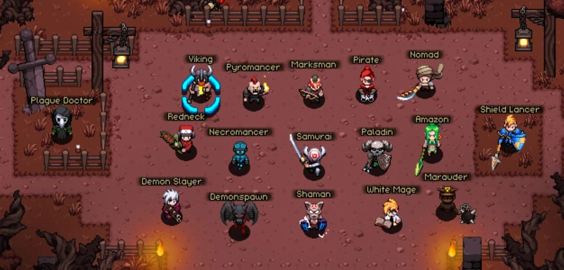
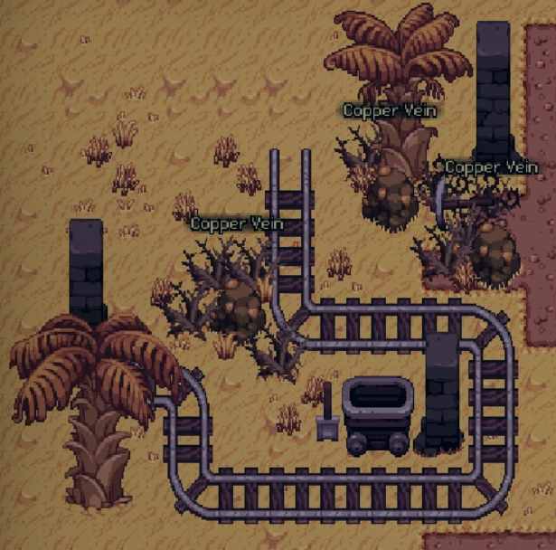

It is a game that has been greatly influenced by the Diablo series, and the item rating and interface are also the same, and each stage is divided into ACT (fields). Because it is LogLike, once you die, relics or potions acquired so far disappear, but the character's level and skill points are not reset, and the equipment is not initialized. That's why it's very important to get good equipment.
If you start the game, you can choose one of the 17 heroes as shown in the next image.
Each hero has their characteristic but if you play the game for the first time, I recommend some kinds of heroes that are easy to start.
| Heros | Damage | Defence | Difficulty |
|---|---|---|---|
| Marksman | Very High | Low | Low |
| Shield Lancer | Low | Very Low | Low |
| Necromancer | High | Low | Very Low |
| White Mage | High | High | Very Low |
As I said above, the most important thing influencing playing the game is equipment. you can get it from farming in the field.
However, the rate of getting gears among tons of items is very low. For overcoming these difficulties, you can trade it with other players using personal trading or auction house. I recommend auction house because if you have money(ruby in this game), you can buy your equipment that other players are selling on auction house easily. Players normally earn the money by hunting in order to get items and sell them. However, the chance of finding a good item is very low. So if you don't have luck, you can even waste a week.
So, I recommend digging minerals and sell them by the auction house, because digging minerals has 3 advantages.
- It is very stable - You can get at least 1 good gear per a day
- You don't need any good equipment.
- You can find mines in every field.
Example of a mining spot
When you find one, walk up to it and press 'F' to start the minigame, and press 'F' again once the circle is within the green area.
Of course, this method will make you bored. However, if you can stand a little boredom, you can wear nice equipment and enjoy all the content of this game.